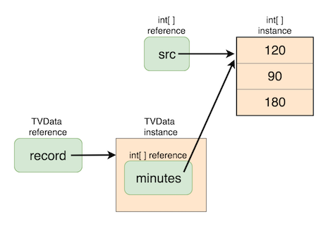
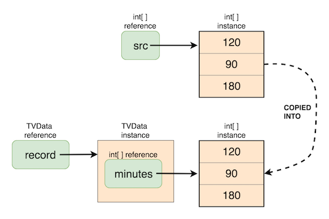
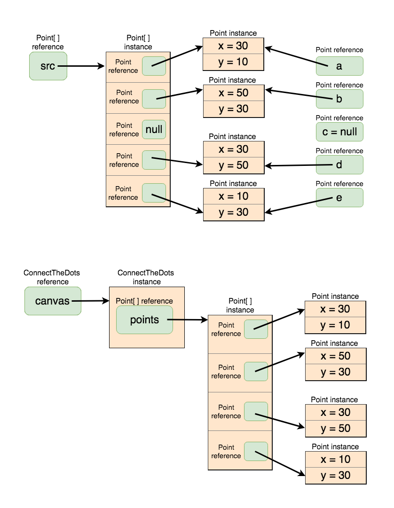

Class holding array(s)
Assumed Knowledge:
Learning Outcomes:
- Defining a class holding array(s).
- Creating and populating objects of such classes.
Author: Gaurav Gupta
Class holding array(s)
Say, we want to keep a track of the total time spent daily watching television.
The dataset would be something like:
- Day 1: 120 minutes
- Day 2: 90 minutes
- Day 3: 180 minutes
- …
If we hold this information in an array, it’s rather primitive and lacks context. However, if we hold it in an array inside a class, we can create instance methods to operate and analyze the dataset, and also provide context and meaning to our objects.
public class TVData {
public int[] minutes;
}
Before we go on and add constructors and other methods, let’s think about how we are going to access the information.
From inside a client (outside the class definition), assuming an object record of class TVData,
- the array holding the information is accessed using
record.minutesWatched. - the number of days for which we have the information is given by
record.minutes.length. - amount of time I spent watching TV on the first day is given by
record.minutes[0]. - amount of time I spent watching TV on the second day is given by
record.minutes[1]. - and so on …
Next, we add a constructor with an array passed that will be reference-copied into the array minutes, and a method that determines total viewing time.
public class TVData {
public int[] minutes;
public TVData(int[] source) {
minutes = source; //reference copy made into array
}
public int totalViewingTime() {
int result = 0;
for(int i=0; i < minutes.length; i++) {
result+=minutes[i];
}
return result;
}
}
The following client gives an example of how the object will be created and used:
public class GoodClient {
public static void main(String[] args) {
int[] src = {120, 90, 180};
TVData record = new TVData(src); //populate with array src
int total = record.totalViewingTime();
System.out.println(total+" minutes viewed");
}
}

The above client would give the expected outcome:
390 minutes viewed
However …
What happens when we change the contents of the source data AFTER populating our object with it?
public class BadClient {
public static void main(String[] args) {
int[] src = {120, 90, 180};
TVData record = new TVData(src); //populate with array src
//so far, so good
src[0] = -400; //nothing stops us from doing so
int total = record.totalViewingTime();
System.out.println(total+" minutes viewed");
}
}
The above client would give the following outcome, which is, let’s say, logically flawed:
-130 minutes viewed
We don’t want the array held inside an object to be a reference copy of the source, but an instance copy.
Everything else remains the same, but we change the constructor as follows,
public TVData(int[] source) {
if(source == null) {
minutes = new int[0]; //empty array
}
else {
minutes = new int[source.length];
for(int i=0; i < source.length; i++) {
minutes[i] = Math.max(0, source[i]); //some more validation
}
}
}

Now, both GoodClient and BadClient will give the same, logically correct, output:
390 minutes viewed
Class holding an array of objects
This section assumes you are familiar with Composition.
For the sake of clarity, we’ll use the same Point class definition used in that topic.
public class Point {
public int x, y;
public Point(int x, int y) {
this.x = x; //"this" distinguishes instance variable from formal paramter
this.y = y;
}
public Point(Point p) {
x = p.x;
y = p.y;
}
public String toString() {
return "("+x+","+y+")";
}
}
Say we want to create a “connect-the-dots” game where multiple points are present on a canvas and adjacent points need to be connected to reveal the art.
Iteration 1
public class ConnectTheDots {
public Point[] points;
public ConnectTheDots(Point[] source) {
if(source == null) {
points = new Point[0];
}
else {
points = new Point[source.length];
for(int i=0; i < points.length; i++) {
points[i] = source[i];
}
}
}
}
There is one logical mistake in the above code.
Click to reveal!
Each item of the array is a reference copy of the corresponding item in `source`.Iteration 2
public class ConnectTheDots {
public Point[] points;
public ConnectTheDots(Point[] source) {
if(source == null) {
points = new Point[0];
}
else {
points = new Point[source.length];
for(int i=0; i < points.length; i++) {
points[i] = new Point(source[i]);
}
}
}
}
Still one issue :(
Click to reveal!
If an item in `source` is `null`, the constructor call will raise `NullPointerException`.Iteration 3 (and the last one)
public class ConnectTheDots {
public Point[] points;
public ConnectTheDots(Point[] source) {
if(source == null) {
points = new Point[0];
}
else {
int nonNullPoints = 0;
for(int i=0; i < source.length; i++) {
if(source[i] != null) {
nonNullPoints++;
}
}
points = new Point[nonNullPoints];
int k = 0; //destination index
for(int i=0; i < source.length; i++) {
if(source[i] != null) {
points[k] = new Point(source[i]);
k++;
}
}
}
}
}

Let’s just write a client to finish this off!
import java.util.Arrays;
public class ArtGallery {
public static void main(String[] args) {
Point a = new Point(30, 10);
Point b = new Point(50, 30);
Point c = null; //BOO!!!!!!!
Point d = new Point(30, 50);
Point e = new Point(10, 30);
Point[] src = {a, b, c, d, e};
ConnectTheDots canvas = new ConnectTheDots(src);
System.out.println(Arrays.toString(canvas.points));
}
}
We will get the following output (notice that the null object was dropped successfully):
[(30,10), (50,30), (30,50), (10,30)]
Complete code is provided in ArtGallery.java